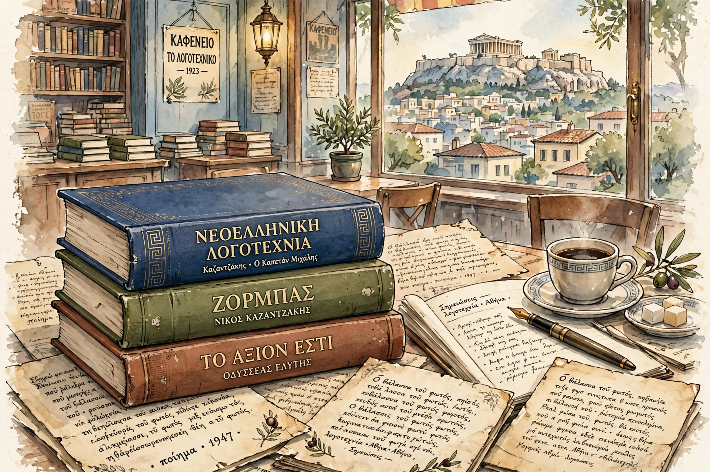

Modern Greek literature is literature written in Modern Greek, emerging from the late Byzantine period and flourishing after Greek independence in the 19th century.

Modern Greek literatureVernacular works such as Digenes Akritas and Cretan Renaissance drama (Erotokritos by Kornaros) precede the modern era. The language question — Katharevousa vs Demotic — shaped literature until Demotic prevailed in 1976.
National poet Dionysios Solomos wrote the Hymn to Liberty. Alexandrian poet Constantine Cavafy gained worldwide fame. Giorgos Seferis (Nobel 1963) and Odysseas Elytis (Nobel 1979) led the Generation of the 1930s; Nikos Kazantzakis wrote Zorba the Greek. Post-war and contemporary writers include Margarita Karapanou and Christos Ikonomou. See Cavafy.